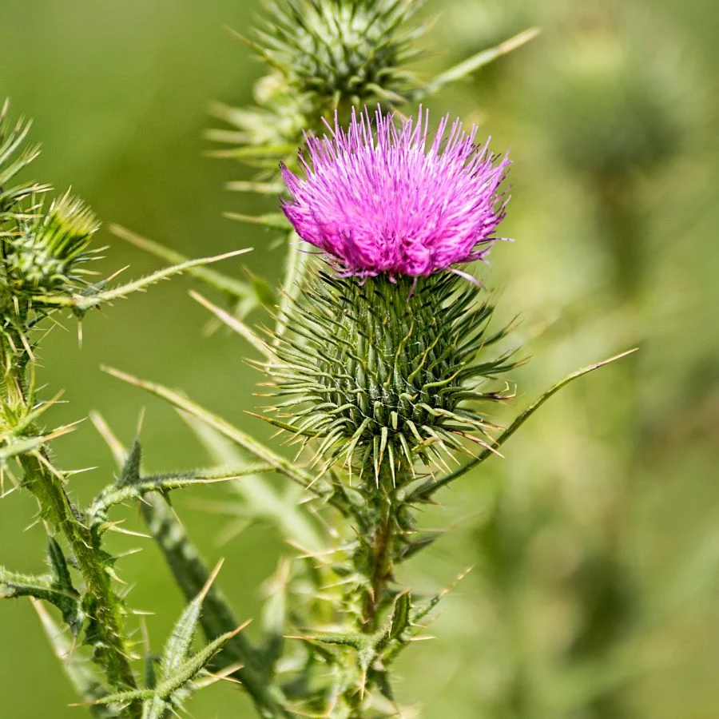

Ayuntamiento de Senés
JARDIN BOTANICO DE ESPECIES AUTOCTONAS DE SENES

Silybum marianum

El cardo mariano (Silybum marianum) es una planta herbácea anual o bienal muy característica del ecosistema mediterráneo. Se desarrolla en terrenos alterados, bordes de caminos y suelos ricos en nutrientes, destacando por su porte robusto y su aspecto espinoso.
Sus hojas son grandes, lobuladas y presentan un característico veteado blanquecino que facilita su identificación. Los tallos son erectos y pueden alcanzar más de un metro de altura. Sus flores, de color púrpura intenso, aparecen en capítulos rodeados de brácteas espinosas.
El cardo mariano se distribuye ampliamente por la región mediterránea y otras zonas templadas. Crece de forma espontánea en terrenos removidos, bordes de caminos y campos abandonados, donde encuentra condiciones favorables para su desarrollo.
En el entorno de Senés, es una planta frecuente en zonas abiertas y suelos ricos, formando parte del paisaje vegetal típico de áreas alteradas.
El cardo mariano es una de las plantas medicinales más conocidas por sus efectos protectores sobre el hígado. Contiene silimarina, un compuesto activo utilizado en fitoterapia para tratar afecciones hepáticas.
Tradicionalmente se ha empleado para mejorar la digestión y favorecer la función hepática, siendo una planta de gran importancia en la medicina natural.
El cardo mariano simboliza la protección y la fortaleza, debido a su aspecto espinoso y su resistencia en condiciones adversas. También se asocia con la curación por sus propiedades medicinales.
Según la tradición, las manchas blancas de sus hojas se relacionan con la Virgen María, lo que da origen a su nombre.
En Senés, el cardo mariano era conocido como "cardoncha". Sus semillas eran consumidas por aves como los jilgueros, conocidos localmente como "colorines".
También se utilizaba en medicina tradicional para tratar afecciones hepáticas, así como en casos de gripe y otros trastornos comunes.
Florece entre primavera y verano, produciendo flores de color púrpura que destacan en el paisaje y atraen a numerosos insectos polinizadores.
Las manchas blancas de sus hojas son una de sus características más distintivas. Además, es una de las plantas más estudiadas en fitoterapia por sus beneficios hepáticos.
A pesar de su aspecto espinoso, es una especie de gran valor medicinal y ecológico dentro del entorno mediterráneo.